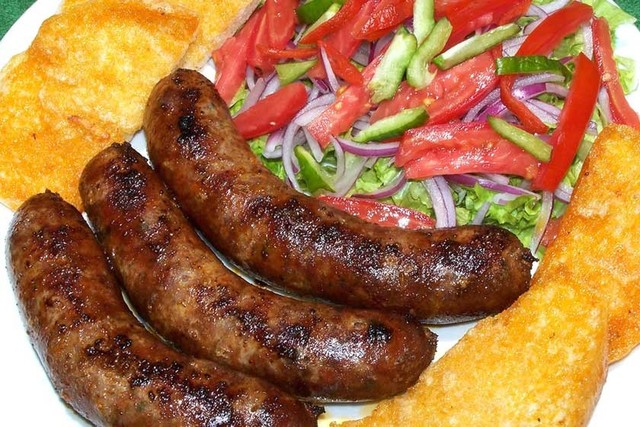

GASTRONOMIA
Sucre es no solo una ciudad llena de historia, sino también un paraíso para los amantes de la buena comida. Su gastronomía refleja una fusión de influencias indígenas y españolas, ofreciendo una variedad de platos tradicionales que destacan por sus sabores intensos y auténticos. Cada bocado es una oportunidad de explorar la cultura y las tradiciones culinarias que han pasado de generación en generación.
Platos tradicionales

CHORIZO CHUQUISAQUEÑO
.